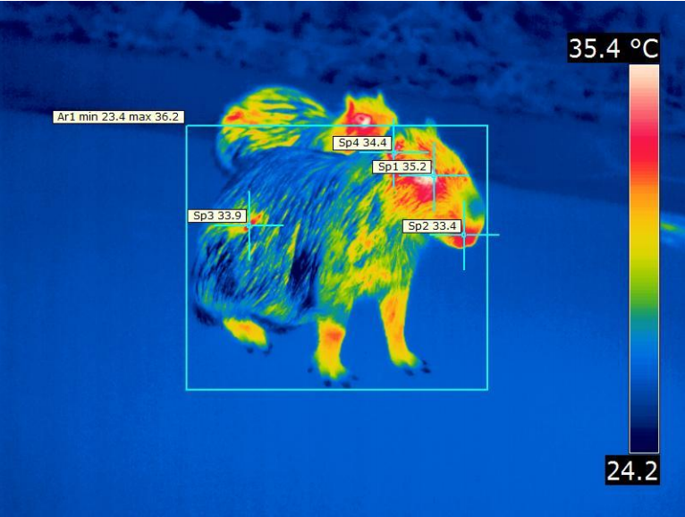
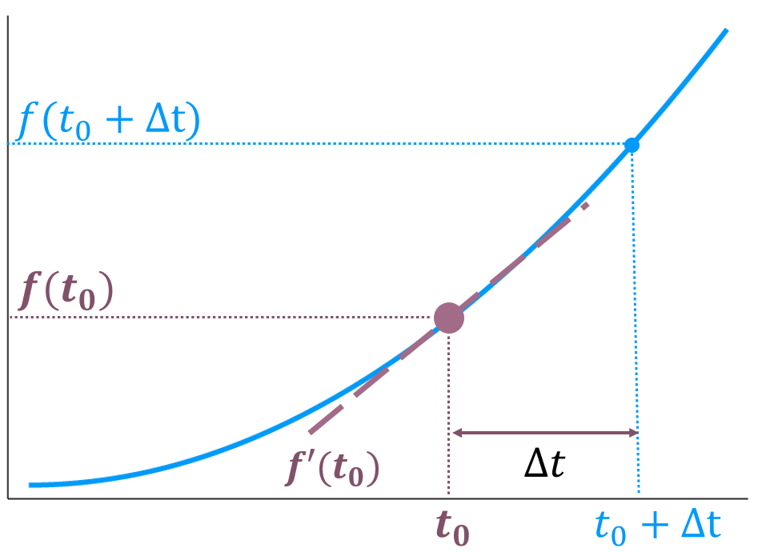
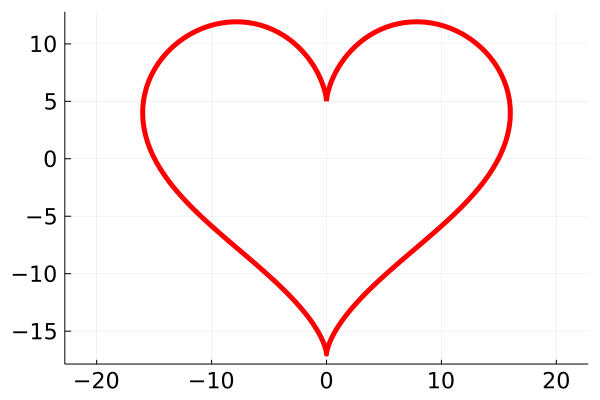
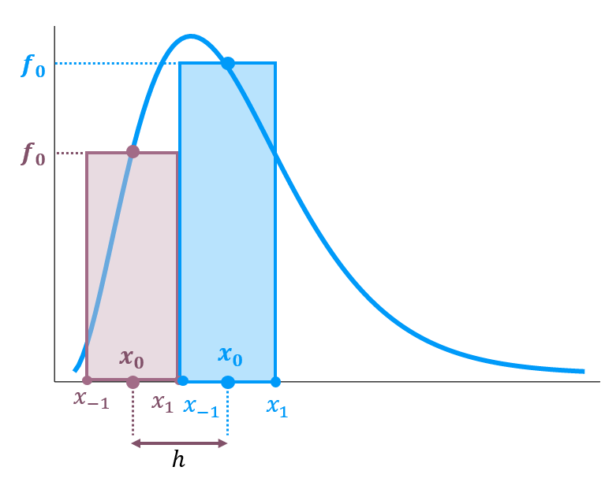

Objetivo Geral: Aprender alguns princípios de cálculo numérico.
Objetivo Especifico: Calcular o valor de derivadas e integrais com métodos numéricos, usando a física de radiação de corpo negro como pano de fundo. Esse assunto é uma das primeiras vezes no curso de Física no qual é necessário encontrar a solução (a raiz) de uma equação transcendental.
Conteúdo: Radiação de Corpo Negro; Derivada; Ordem de Erro; Método de Newton-Raphson, Método da Secante; Quadratura do Trapézio, Simpson, Bode.
Você já assistiu algum filme do Predador? Uma das características mais marcantes do personagem é sua tecnologia de visão noturna. Isso não é pura ficção científica, há décadas que seres humanos também já usam imagens térmicas, e aplicações fora do campo militar existem aos montes, a mais interessante que devo mencionar é a observação de capivaras como na Figura 3.1.

Tudo que possui matéria emite ondas eletromagnéticas em diferentes frequências. Você nesse momento esta emitindo radiação no regime do infra-vermelho, que nosso olhos não conseguem ver, mesmo você estando brilhando. A explicação desse fenômeno é recente na história da humanidade, e em seu curso de Física Moderna, estudará a Radiação de Corpo Negro.
3.1 Radiação Solar
O melhor exemplo de Corpo Negro que qualquer um pode acessar, é Sol de todo dia1. Ele parece amarelo, mas na verdade é composto de vários comprimentos de onda diferentes, alguns dos quais são bloqueados pela atmosfera (lembra da Camada de Ozônio?), outros chegam na superfície, e fazem a vida prosperar - o pico do espectro solar ser no campo visível humano é provavelmente uma coincidência causada por uma junção de fatores complexos.

{kind=link}
Para estimar o espectro de radiação de qualquer objetivo no universo, usamos a Lei de Planck. Ela será nosso objeto de estudo nesse projeto pois uma equação que facilmente recorremos a ajuda de Cálculo Numérico. As próximas seções são dedicadas a apresentar o mínimo de cálculo numérico.
Não tenha medo do tamanho do projeto. As tarefas serão fáceis, mas como os conceitos são novos, eu preciso dedicar mais tempo explicando os detalhes.
3.2 Derivada
Em algum momento durante seu curso de Cálculo 1, você viu a definição de Derivada através do uso de Limite em um ponto \(t_0\) é :
\[ f'(t_0) = \lim_{\Delta t \to 0} \frac{ f(t_0 + \Delta t) - f(t_0) }{\Delta t}. \]

Para ser estritamente correto, o valor de \(\Delta t\) deve ser um infinitesimal. Contudo, fazem alguns séculos que engenheiros e físicos assumem que \(\Delta t\) seja apenas um valor pequeno o suficiente2, permitindo calcular derivadas por força bruta.
Pelo que escrevi até o momento, a derivada em certo posição deveria ser uma expressão simples, apenas calculamos:
\[ \frac{ f(t_0 + \Delta t) - f(t_0) }{\Delta t} \tag{3.1}\]
Contudo, aparecem erros de arredondamento ou erros de truncamento e nossas respostas perdem precisão dependendo do valor de \(\Delta t\).
Os erros de truncamento não são imprevisíveis, em muitos casos sabemos a Ordem de Magnitude, o big oh, \(\mathcal{O}(\Delta t)\) do nosso problema,por exemplo, para a Equação 3.1, o erro de truncamento é \(\mathcal{O}(\Delta t)\).
Livros de Cálculo Numérico ou Análise de Algoritmos trazem uma discussão mais elaborada sobre esse assunto. Aqui, o ponto importante é conhecer o vocabulário de cálculo numérico e seus conceitos.
A Tabela 3.1 e Tabela 3.2 contêm fórmulas que você fará uso durante esse projeto.
| Fórmula | Erro | |
|---|---|---|
| Para Frente de 2 pontos | \(f'(t_0)\) = \(\frac{ f(t_0 + \Delta t) - f(\Delta t) }{\Delta t}\) | \(\mathcal{O}(\Delta t)\) |
| Para traz de 2 pontos | \(f'(t_0)\) = \(\frac{ f(t_0) - f(t_0 - \Delta t) }{\Delta t}\) | \(\mathcal{O}(\Delta t)\) |
| Simétrica de 3 pontos | \(f'(t_0)\) = \(\frac{ f(t_0+ \Delta t) - f(t_0 - \Delta t) }{2\Delta t}\) | \(\mathcal{O}(\Delta t^2)\) |
| Simétrica de 5 pontos | \(f'(t_0)\) = \(\frac{ f(t_0- 2\Delta t) -8f(t_0 - \Delta t) + 8f(t_0 + \Delta t) - f(t_0 + 2\Delta t)) }{12\Delta t}\) | \(\mathcal{O}(\Delta t^4)\) |
| Fórmula | Erro | |
|---|---|---|
| Simétrica de 3 pontos | \(f''(t_0)\) = \(\frac{ f(t_0 - \Delta t) - 2f(t_0) + f(t_0 + \Delta t) }{\Delta t^2}\) | \(\mathcal{O}(\Delta t^2)\) |
| Simétrica de 5 pontos | \(f''(t_0)\) = \(\frac{ -f(t_0 - 2\Delta t) + 16f(t_0 - \Delta t) - 30f(t_0) + 16f(t_0 + \Delta t) - f(t_0 + 2\Delta_x)}{12\Delta t^2}\) | \(\mathcal{O}(\Delta t^3)\) |
| Assimétrica de 4 pontos | \(f'''(t_0)\) = \(\pm \frac{ -f(t_0 \mp \Delta t) + 3f(t_0) - 3f(t_0 \pm \Delta t) + f(t_0 \pm 2\Delta t)) }{\Delta t^3}\) | \(\mathcal{O}(\Delta t)\) |
| Assimétrica de 5 pontos | \(f'''(t_0)\) = \(\frac{ -f(t_0 - 2\Delta t) + 2f(t_0 - \Delta t) - 2f(t_0 + \Delta t) + f(t_0 + 2\Delta t)) }{2\Delta t^3}\) | \(\mathcal{O}(\Delta t^2)\) |
Sobre a temática de erros de truncamento, eu recomendo ao leitor curioso, a palestra do professor John L. Gustafson, discutindo sobre erros numéricos, disponível no YouTube.
Vamos fixar os novos conceitos calculando a derivada de alguma função conhecida, e para aumentar sua cultura, vamos calcular a primeira derivada da Equação Parametrizada de um Coração:
\[ \begin{alignat}{4} x(t) &= 16sin^3(t)\\ y(t) &= 13cos(t) - 5cos(2t) - 2cos(3t) - cos(4t) \end{alignat} \tag{3.2}\]

Baseado na Equação 3.2 :
Obtenha a expressão analítica da Primeira Derivada, \(x'_{exato}\), e Segunda Derivada \(x''_{exato}\).
Implemente as funções Primeira e Segunda Derivada Simétrica de 3 pontos.
Sorteie um número aleatório para \(t_0\).
Crie um vetor com valores de \(\Delta t \in [10^{-8}, 10^{-1}]\) em escala logarítmica.
Calcule \(|x'(t_0) - x'_{exato}(t_0)|\) para diferentes valores de \(\Delta t\)
Repita o item anterior para a Segunda Derivada.
Exiba os resultados em uma Figura de escala log-log. Para melhor interpretação, inverta o eixo X.
Agora que você já sabe derivar uma função \(f(t)\), usaremos o mesmo raciocínio com vetores. Assim, podemos calcular a derivada da Lei de Planck
\[ E(\lambda; T) = \frac{2hc^2}{\lambda^5}\frac{1}{e^{hc/\lambda kT} - 1} \times 2.161413 \cdot 10^{-14}\pi \frac{W^2}{m^2 nm} \tag{3.3}\]
Essa expressão da Lei de Planck não é apresentada em livros textos de física, ela fornece a Radiância solar, contudo, medições de satélite correspondem a Irradiância. Para mais detalhes, confira a discussão em KatyB [2014] e uma explicação mais esclarecedora em H. Zhu [2019].
- Nesse exercício, graficaremos a Lei de Planck junto a dados experimentais. Não é necessário entender as origens e fundamentos da Equação 3.3 para realizar o exercício, mas se lhe interessa, sugiro o capítulo 3 do livro James A. Coakley Jr [2014].
Como essa equação é famosa, pesquise os valores das constantes fundamentais, e escreva uma função em Julia que calcule \(E(\lambda; T)\)
Com \(T=6000\), e um vetor \(\lambda \in [200, 2500]\, \text{nm}\), calcule o espectro de irradiância do Sol armazenando os resultados em um vetor chamado \(E\_\lambda\)
Exiba o espectro que você obteve em uma figura, e normalize o eixo vertical, o comprimento de onda, em nanômetros, ou seja, divida todos os valores do eixo vertical por \(1 \text{nm} = 10^{-9}\text{m}\). Assim, o eixo vertical poderá ser descrito como ‘\(\lambda \; [\text{nm}]\)’.
Clique aqui e baixe os dados que usaremos, esses dados foram obtidos do National Renewable Energy Laboratory Laboratory [2021]. A primeira coluna é o Comprimento de Onda multiplicado por um fator \(10^9\) (ou seja, em unidades de \(nm\)), e a segunda é a irradiância em \(W m^{-2} nm^{-1}\). Sobreponha esses dados experimentais com a figura produzida com os dados teóricos.
Nosso próximo objetivo é calcular o comprimento de onda no qual a irradiância é máxima, vamos denominar esse valor \(\lambda^*\). A nível computacional é muito fácil, é só usar o comando findmax(). Se os valores do comprimento de onda estão em um vetor \(\lambda\)
E_max, idx_max = findmax(E_λ)
λ_star = λ[idx_max]Sinto informar, mas nós usaremos o caminho das pedras.
Vamos achar o máximo com conhecimentos de Cálculo 1: o máximo (ou minimo, ou inflexão) de uma função \(f(x)\) existe quando a primeira derivada é nula, \(f'(x^*) = 0\).
A expressão analítica de \(E'(\lambda)\) disponível no Wikipedia é Wikipedia [2021] \[ E'(\lambda; T) = 2hc^2\left ( \frac{hc}{kT\lambda^7}\frac{e^{hc/\lambda kT}}{(e^{hc/\lambda k T} -1 )^2} - \frac{1}{\lambda^6}\frac{5}{e^{hc/\lambda k T} -1 } \right ) \tag{3.4}\]
- Implemente a Primeira Derivada Simétrica de 5 Pontos e aplique sobre os Dados Teóricos que você tem.
AvisoNão calcule a primeira derivada sobre os dados de satélite, pois as oscilações são grandes o suficientes para atrapalhar nossa análise - e não quero que voê se preocupe com mais problemas.
ObservaçãoVocê esta calculando derivada de vetores, então alguns pontos nas extremidades ficarão sem derivadas, a menos que algum critério especial seja definido. Não faremos nada, simplesmente ignore a derivada nas bordas.
Diminua a magnitude dos dados com uma normalização do tipo \(f \rightarrow f/max(f)\)
Crie um vetor com os valores analíticos e também os normalize
Compare com os valores numéricos com os analíticos em uma figura
3.3 Raíz
O último exercício referenciava o Wikipédia. Caso não o tenha acessado a página, agora é sua chance. Nela, busque pela seção Derivation from Planck’s law, e você descobrirá que a solução para o valor máximo do comprimento de onda \(\lambda_{peak}\), não é obtido por manipulações algébricas. Você precisa recorrer ao computador para descobrir qual a solução da equação:
\[ (x-5)e^x + 5 = 0 \tag{3.5}\]
Iremos estudar métodos que permitem achar a solução de problemas do tipo \(g(x) = 0\), ou seja, em termos técnicos, nós queremos as raízes de uma função.
Inicialmente, vamos verificar que a solução da Equação 3.5 é \(x = 4.9651142\). Em seguida, usaremos esses métodos para encontrar o comprimento de onda \(\lambda^*\) onde \(E'(\lambda^*; T) = 0\) - que é exatamente onde fica o pico do espectro.
- O primeiro método é o menos elaborado. Nós podemos exibir a função \(ln|g(x)|\), pois \(ln(0) = -\infty\) é uma singularidade, facilmente identificável como um declínio muito rápido.
Crie 2 arrays, \(\vec{x}\) e \(\vec{g}\) e exiba \(\vec{x} \; vs \; ln(abs(\vec{g}))\). Você deve escolher os valores de \(\vec{x}\), até visualizar a singularidade.
Em seguida, faça um loop que buscará pela raiz \(x^*\) sabendo que \(|g(x^*)|\) é um mínimo. Portanto, para um valor \(|g(x_i)|\) antes da raiz, e outro ponto \(|g(x_j)|\) depois da raiz, sempre será verdade que \(|g(x_i)| > |g(x^*)|\) e \(|g(x_j)| > |g(x^*)|\).
Outra maneira de interpretar o mesmo problema, é que dado um \(g(x_i)\) antes da raiz, e outro \(g(x_j)\) depois da raiz, eles necessariamente possuem sinais opostos (um positivo, e outro negativo. Estou ignorando o caso onde a função apenas toca o eixo vertical). Assim, \(g(x_i)*g(x_j) < 0\). Use essa condição para encontrar \(x^*\) novamente.
O processo de achar a singularidade não é automático, ele é um processo de tentativa e erro, mas pode salvar sua vida quando os métodos tradicionais não funcionarem.
- O segunda método se chama Método de Newton-Raphson. Ele consiste em usar derivadas e intersecções sucessivas até chegar na raiz.
Tenho certeza que ver um vídeo é mais interessante que ler a explicação. Assista Newton-Raphson method | Animated and explained | Algorithm for finding roots of a function no YouTube do Canal
MathAndPhysics.No final do vídeo, você deve ter encontrado a Fórmula \[ x_{i+1} = x_{i} - \frac{g(x_i)}{g'(x_i)} \tag{3.6}\]
Obtenha \(g'(x)\) da Equação 3.6 com a Equação 3.5
Você precisa escolher um valor inicial \(x_0\), use a sua resposta do exercício anterior, e aplique a em um loop, faça a iteração da Equação 3.6. Pare quando \(|x_{i+1} - x_i| < 10^{-6}\).
Armazene todos valores e os exiba numa figura.
Eu alterei a função ‘\(f\)’ exibida no vídeo, para ‘\(g\)’, apenas para manter consistência de notação.
O último método se chama Método da Secante.
Você Já deve ter percebido que não vou definir as tecnicalidades do método aqui no texto. Assista o vídeo Explicação do Método da Secante - Conceitos básicos - Utilizando o Software GeoGebra do Canal
Matemática na Veia Online.Dessa vez, o vídeo não fornece uma fórmula, apenas um procedimento, e justamente isso que eu quero que você entenda. Eu pouparei seu tempo, e darei a Fórmula: \[ x_{i+1} = x_{i} - g(x_i)\frac{x_i - x_{i-1}}{g(x_i) - g(x_{i-1})} \tag{3.7}\]
Repare que não precisamos mais de \(g'(x)\), mas precisamos armazenar um valor anterior, \(x_{i-1}\).
- Encontre a raiz \(x^*\) com Equação 3.7 com o mesmo critério de parada \(|x_{i+1} - x_i| < 10^{-6}\).
Ao exibir a evolução dos valores, você deve encontrar que o Método da Secante é mais lento que o Newton-Rapshon.
Temos todo o conhecimento para obter \(\lambda_{peak}\)
Use o primeiro método, e com a Primeira derivada de irradiância dos dados teóricos normalizados, diga qual o \(\lambda^*\) no qual \(E(\lambda; T)\) é máximo.
Use o Método de Newton-Raphson e tente descubrir \(\lambda_{peak}\) com Equação 3.3 e Equação 3.4
Você não deve ter conseguido achar \(\lambda_{peak}\) com o Método de Newton-Raphson. Isso é resultados das ordens de magnitude astronômicas que estão envolvidas nas divisão \(g(x_i)/g'(x_{i})\). Todavia, o método mais simplista conseguiu fornecer a resposta correta.
Nem sempre os algoritmos mais elaboradas são as melhores.
3.4 Integral
A Equação 3.3 diz quanta energia existe para cada comprimento de onda, mas e se eu te perguntasse qual a energia total? A resposta para essa pergunta é a Lei de Stefan-Boltzman.
Obtemos a energia total integrando sobre todos os comprimentos de onda - na verdade, é mais fácil integrar usando as frequências, \(E(\nu)\), do que com comprimentos de onda \(E(\lambda)\). Ao realizar essa operação, vamos encontrar novamente uma expressão sem solução analítica convencional, confira a referência [University of Washington Center for Quantitative Science 2020], na seção 8.3.2 Stefan-Boltzmann Law encontramos:
\[ E_{total} = \frac{8\pi h}{c^3} \left ( \frac{kT}{h}\right )^4\int_0^{\infty} \frac{x^3dx}{e^x - 1} \]
Nessa seção, nosso objetivo é usar e obter o valor da integral:
\[ I = \int_0^{\infty} \frac{x^3dx}{e^x - 1} \tag{3.8}\]
Talvez você estudará em um curso de Física Matemática como resolver esse tipo de integral, você usará técnicas de Integrais de Contorno, e o resultado será \(\pi^4/15\). Como essa integral é um problema clássico, a solução já esta na internet, como por exemplo aqui S [2012].
Calcularemos o valor de uma integral a lá Integrais de Riemann. Dividimos um intervalo \(x\) em segmentos discretos \([x_1, x_2, ..., x_N]\). Em seguida determinamos todos os \(f(x_i)\), com \(x_i = x_{0} + i\cdot h\), fornecendo assim, pontos para criar pequenos retângulos, cuja área é fácil de obter. Por último, somamos a área de todos os retângulos. Quanto menor o espaçamento \(h = x_{i+1} - x_{i}\), melhor nossa estimativa da integral.
Na Figura 3.4 vemos uma representação exagerada do procedimento. Dado um ponto \(x_0\), conseguimos definir um lado do retângulo como sendo o segmento \([x_{-1}, x_{1}]\). O outro lado será a altura \(f(x_0)\).

No entanto, podemos ser mais inteligentes, e não criar retângulos, mas sim trapézios. Isso trará resultados mais rápidos. A tabela a seguir fornecem algumas fórmulas que resumem diferentes métodos:
| Fórmula | Erro | |
|---|---|---|
| Trapézio | \(\int^{h}_{-h} = \frac{h}{2}( f(x_{-1}) + 2f(x_0) + f(x_{1}) )\) | (h^3)$ |
| Simpson | \(\int^{h}_{-h} = \frac{h}{3}( f(x_{-1}) + 4f(x_0) + f(x_{1}) )\) | \(\mathcal{O}(h^5)\) |
| Bode | \(\int^{h}_{-h} = \frac{2h}{45}( 7f(x_0) + 32f(x_{1}) + 12f(x_{2}) + 32f(x_{3})) + 7f(x_{4})\) | \(\mathcal{O}(h^7)\) |
Agora que você já possui as fórmulas, basta discretizar o espaço o domínio de integração. Como nossa função converge para zero rapidamente, não precisamos integrar até o infinito.
Defina uma função \(f(x) = x^3/(e^x - 1)\)
Crie um vetor com valores de \(x = [10^{-8}, 50]\) e discretize ele em \(N=2^{12}\) passos.
Calcule a Integral da Equação 3.8 usando os 3 métodos tabelados. Repare que a Figura 3.4 consegue representar os índices das Fórmula do Trapézio e Simpson, mas não para Fórmula de Bode. Você precisa de uma estrutura de repetição com passo 2 para fórmula do Trapézio/Simpson, e passo 4 para Bode.